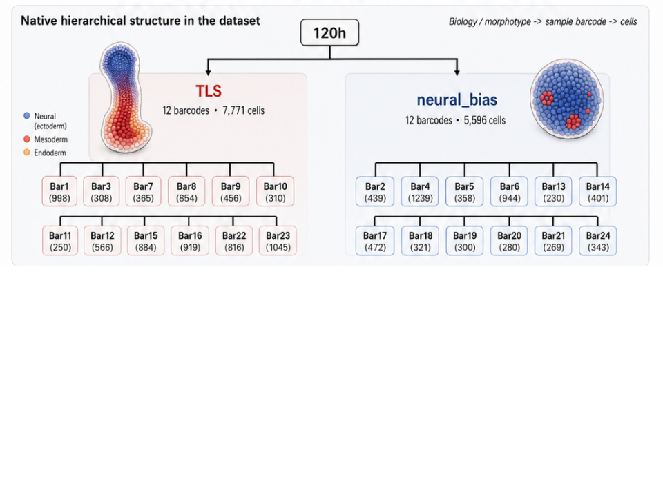
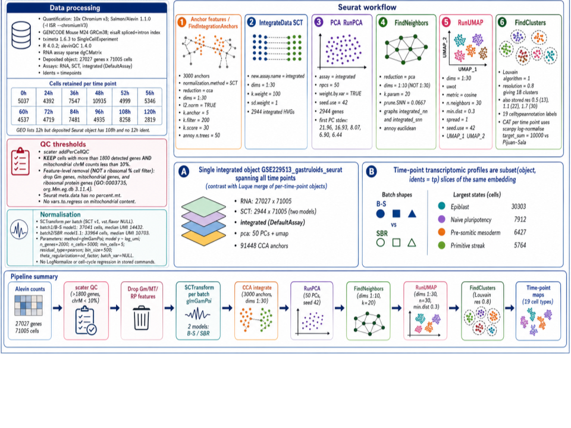
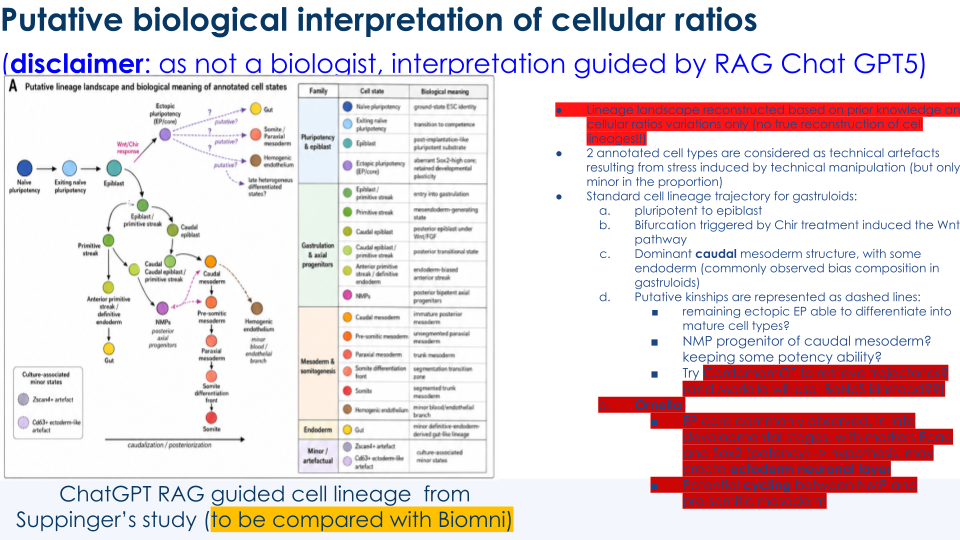
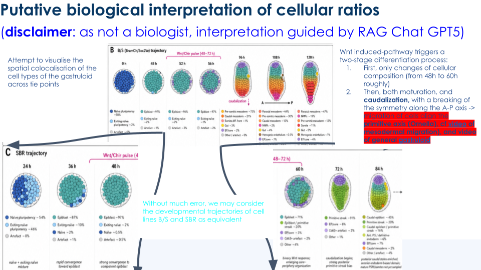

%%{init: {"theme": "sandstone", "flowchart": {"htmlLabels": true}}}%%
flowchart TD
SC["scRNA-seq GSE229513"] --> L1["Cell line B-S"]
SC --> L2["Cell line SBR"]
L1 --> Tsc["Ordinal times 0–120 h"]
L2 --> Tsc
Tsc --> Both["Both lines only at 48 h"]
BULK["Bulk RNA-seq GSE229386"] --> W1["Standard Wnt pulse at 48 h"]
BULK --> W2["Early Wnt pulse at 24 h"]
W1 --> R1["48 h, 72 h, 96 h × 3 replicates"]
W2 --> R1
GRN["GGMs for DeCovarT"] --> TP["Independently at 48 h, 72 h, 96 h"]
TP --> CT["One $$\\widehat{\\boldsymbol{\\Theta}}_{j,t}$$ per labelled type"]
2 Suppinger gastruloids
Single-cell UMI counts and bulk HTSeq tables from the murine gastruloid resource of Suppinger and colleagues (Cell Stem Cell, 2023; GEO GSE229513 and GSE229386; (Suppinger et al. 2023)). Download commands belong in data/raw/README.md. Never overwrite data/raw/.
The scRNA-seq experiment is one technical 10x Chromium 3′ v3 resource, not a panel of independent biological replicates for GRNs or for DESeq2. Zeros are molecule-sampling counts until proven otherwise (Note 4.3). GSE250136 is a later stem-embryo dataset and must not be conflated with Suppinger.
2.1 Hierarchical design
The native hierarchy is the same idea as a barcode-nested gastruloid atlas (morphotype \to sample \to cells), but the factors here are cell line and time, not TLS versus neural-bias organoids.

Single-cell (GSE229513). Top level: the mESC line (B-S versus SBR). Bottom level: the ordinal time slots of gastruloid development. The integrated Seurat object spans all times (Figure 2.3). Cell line is confounded with time: only 48 h has both lines; every other slot is a single line, and that line changes across the series. We therefore do not put cell line in the GRN design. Developmental trajectories of B-S and SBR are treated as equivalent for the purpose of type-level Gaussians (Figure 2.5).
Bulk RNA-seq (GSE229386). Top level: the Wnt schedule — standard pulse at 48 h (control-like gastruloids) versus a premature pulse at 24 h (early treatment). Bottom level: three biological replicates at each of 48 h, 72 h and 96 h.
GRN restriction. We learn an undirected GGM independently for each labelled cell type j at each time t\in\{48,72,96\}\,\mathrm{h} for which a bulk sample exists. We do not share graphs across time, and we do not estimate a cell-line effect.
2.2 Seurat processing
Embeddings, QC and clustering for the atlas follow the Seurat workflow in Figure 2.3 (Alevin counts, scater QC, SCTransform Pearson residuals per batch for integration, CCA, PCA, UMAP, Louvain). That residualisation is for integration and visualisation. It is not the observation table of the graphical lasso (Section 4.2, Section 3.2).

Templates: 01_01_single_cell_exploration_suppinger.R and 02_01_deconvolution_preprocessing.R; local copies scripts/01_01_*.R and scripts/02_01_*.R.
# Run from the repository root.
# seurat_obj <- readRDS(file.path(
# "data", "raw", "GSE229513_gastruloidsobject.rds"
# ))2.3 Biological interpretation from single-cell compositions
Figure 2.4 and Figure 2.5 summarise a putative reading of annotated type proportions along gastruloid time. They are not a reconstruction of embryonic lineages. Two annotated states are treated as technical artefacts of culture stress. The working caudal sequence after the Chir/Wnt pulse is pluripotency \to epiblast \to primitive streak \to caudal mesoderm / NMP \to pre-somitic mesoderm / somites, with a residual endoderm bias typical of gastruloids.


2.4 Deconvolution-guided reading of early versus standard Wnt
Second-generation mean-based deconvolution (BayesPrism, SCDC, DWLS) on the bulk series is used only as a compositional narrative, not as DeCovarT’s covariance model. Figure 2.6 contrasts a standard Wnt pulse at 48 h with a premature pulse at 24 h, at the three bulk-matched times.
On the control-like arm, 72 h is primitive-streak enriched and 96 h shows pre-somitic mesoderm and somite progression. On the early Wnt arm, 48 h retains more naïve pluripotency, 72 h is dominated by ectopic pluripotency with a reduced primitive streak, and 96 h nearly loses PSM. Absolute abundances disagree across algorithms — weighted least squares is sensitive to collinearity among neighbouring states — so we treat direction of change (ectopic pluripotency up, primitive streak and PSM down) as the consensus, not the point estimates.
That is why GRNs are fit per type and per time at 48 h, 72 h and 96 h: those are the slots where a bulk composition exists to confront the Gaussians. Cell line remains out of the precision model (Section 2.1).
2.5 Outputs
- Intermediate
SummarizedExperimentandSingleCellExperimentunderdata/intermediate/ - Codebook:
data/dictionaries/suppinger_features.csv - Knowledge-driven markers:
data/dictionaries/mouse_gastruloid_signaling_markers.csv
Suppinger, Simon, Marietta Zinner, Nadim Aizarani, et al. 2023. “Multimodal Characterization of Murine Gastruloid Development.” Cell Stem Cell 30 (6): 867–84. https://doi.org/10.1016/j.stem.2023.04.018.